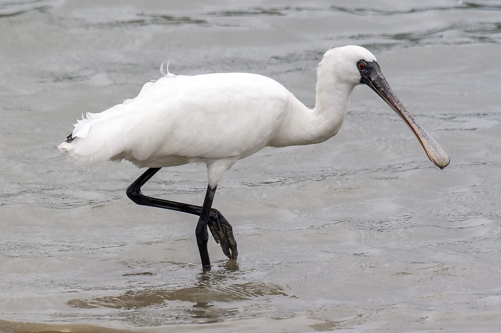

返回名录NO. 064 · 海岸与滩涂 / 鹮科 · Threskiornithidae
黑脸琵鹭
Platalea minor全球仅数千只，珠海是它们过冬的家
一张又长又扁、末端像汤匙的黑喙，配上一张黑色的「脸」——黑脸琵鹭是全球最濒危的涉禽之一，野外种群一度不足 300 只。经过二十多年保护，如今回升到六千余只，而珠海的滩涂，是它们最重要的越冬地之一。
图集 Plates & Photographs
一张科学绘图（博物画）用于对照形态与色块，两张野外摄影记录它在真实光线里的样子。点击任意一张可放大。
辨识特征 Identification
- 喙长而扁平，中部收窄、末端膨大成汤匙状，黑色；取食时在水中左右扫动，靠触觉捕食。
- 面部眼周、额、喙基裸露皮肤为黑色，形成标志性的「黑脸」；繁殖期头顶与后颈长出黄色饰羽。
- 体羽通体白色，繁殖期前颈与胸部染淡黄色；飞羽末端黑色，飞行时翼尖呈黑边。
- 腿腿黑色，较长，适合在浅水中涉行。
习性 Behaviour
喜集群在退潮后的滩涂、基围鱼塘浅水区活动，常与白琵鹭、鹭类混群。取食方式独特：把汤匙状的喙探入水中，左右扫动，感应到鱼虾后迅速合拢。性警觉，人距数百米即会惊飞，因此观赏必须保持距离、避免高声。全球种群高度依赖少数几个越冬地，珠海淇澳—担杆岛与横琴一带是关键地点。
鸣声 Voice
野外鸣声录音
点击波形可跳转 · 建议佩戴耳机
0:00 / 0:10
录音 John Wright（Xeno-canto） · 许可 CC BY-NC-SA 3.0
· 原始文件
平时极安静。繁殖期在巢区发出低沉的「grr」或「tok」声，日常几乎不叫，主要靠视觉交流。下面这段录音录于日本佐贺的滩涂，叫声很轻，混在远处鸻鹬群的背景声里——建议调大音量、戴耳机听。
在珠海去哪里找 Where to Watch
- 淇澳岛红树林保护区
- 横琴芒洲湿地
- 金湾滩涂
观察提示
国家一级保护动物，观测须在保护区规定区域、用单筒望远镜远距离观察，切勿靠近或使用无人机——惊飞一次，可能耗掉它们一天的能量预算。